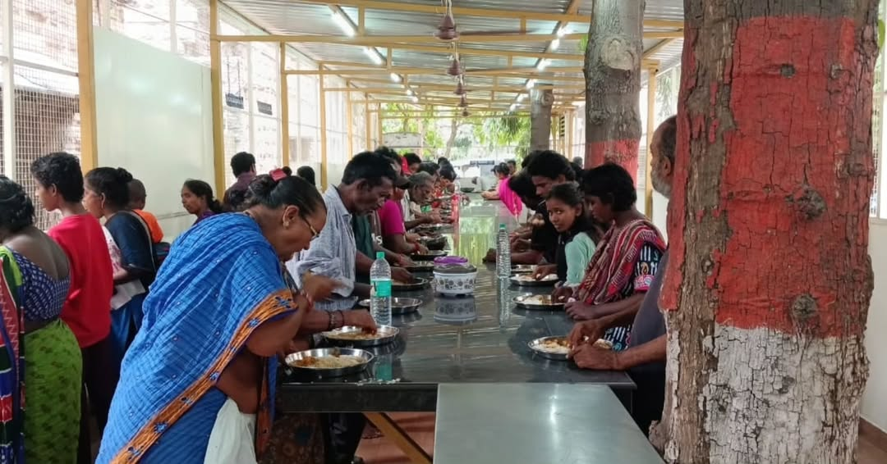
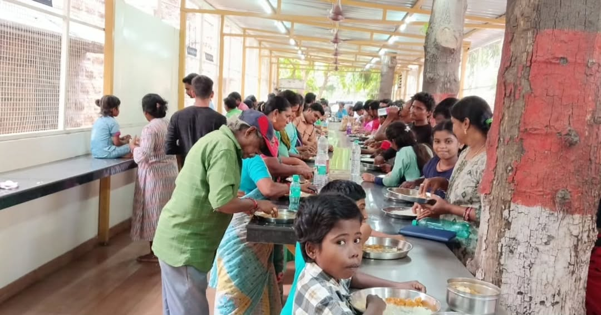
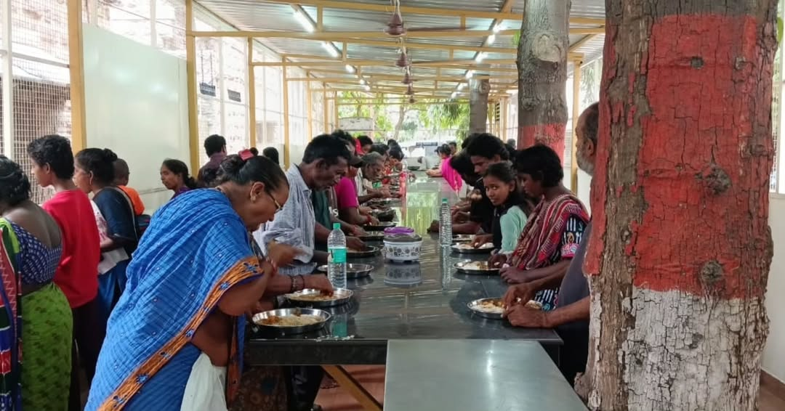
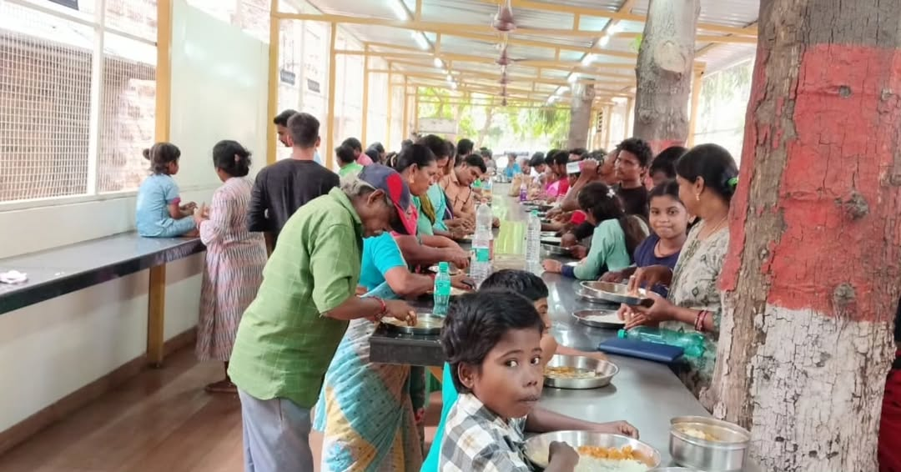

Sponsor a Meal. Change a Life.
Every meal brings comfort to caregivers watching over their loved ones
Every meal served is a smile shared.
 



"No one within a ten-mile radius of our center should go hungry"
(Founder-Acharya of Worldwide Hare Krishna Movement)
Behind every number is a story of hunger turned into hope
Stomachs Filled with Hope
Ensuring no one sleeps hungry on our watch.
Beacons of Care
Reaching the heartbroken in the darkest corridors.
Hands Serving with Love
United by empathy, driven by the spirit of seva.
Pure Devotion
Every grain offered to the Divine before it's served.
Simple. Efficient. Transparent.
Your contribution is processed securely and an 80G tax receipt is generated instantly.
We buy premium rice, dal, and fresh vegetables. Meals are cooked in FSSAI-certified temple kitchens.
Customized vans rush the hot prasadam to 15+ government hospitals before lunchtime.
A hungry caregiver receives a nutritious meal, free of cost and full of love.
100% of your donation goes directly to food procurement and distribution.
Freshly prepared prasadam served daily with love

Freshly cooked
Rich in protein
Fresh vegetables
Cooling & healthy
Prepared in FSSAI-certified ISKCON temple kitchens with the highest standards of cleanliness and devotion
Subhojanam is ISKCON Visakhapatnam's initiative to serve nutritious, sacred meals to caregivers and their families at government hospitals. We bring the Lord's prasadam to those going through their hardest days.
Every day, our dedicated team of volunteers distributes freshly prepared prasadam at multiple hospitals, ensuring no caregiver goes hungry while looking after their loved ones.
We believe in absolute accountability. Here is how we protect your contribution.
All donations are eligible for 50% tax exemption under Section 80G of the Income Tax Act. You will receive your tax certificate instantly.
Registered Public Charitable Trust, fully compliant with all CSR and government regulations.
Our books are audited annually by independent Chartered Accountants. We publish every report for public view.
Your transaction is secured with 256-bit SSL encryption. We use industry-standard payment gateways to keep your data safe.
Serving at Major Government Hospitals
For a caregiver, a meal isn't just food. It's the strength to keep fighting.
"I used to choose between my hunger and his medicine. Today, because of you, I didn't have to choose."
Standing in the pharmacy line, Savitri Amma realized she had to skip lunch to afford her husband's pills. Then the Subhojanam van arrived. The hot meal gave her strength, and the money she saved bought the medicine.
"My legs were trembling from hunger. I thought I would collapse before my son woke up."
Rajesh hadn't eaten in 3 days while waiting outside the ICU. "This meal gave me the strength to stand by his side for another night. It felt like God himself sent this plate," he says with tears in his eyes.
"In this big city of strangers, I felt invisible. When the volunteer served me, I felt seen."
Gouri traveled from a remote village with no one to help. "I was scared and alone. This prasadam wasn't just food; it was a message from Krishna that we haven't been forgotten."
Hunger doesn't wait for tomorrow. Your ₹500 can save a family from despair right now.
"patraṁ puṣpaṁ phalaṁ toyaṁ yo me bhaktyā prayacchati"
— Whoever offers Me a leaf, a flower, fruit, or water with devotion, I accept it. — Bhagavad Gita 9.26
Donate ₹500 & Feed Them TonightYes. ISKCON Visakhapatnam is a registered charitable trust under Section 80G of the Income Tax Act. You will receive a tax exemption certificate via email within 24 hours of your donation.
Our volunteer team prepares meals fresh every day in ISKCON's FSSAI-certified temple kitchens. The food is first offered to Lord Krishna as prasadam, then hygienically packed and distributed at 15+ government hospitals across Visakhapatnam to caregivers and families of patients.
Absolutely! Use the "Monthly Donation" toggle on the donation card. Monthly donors are the backbone of our program — your recurring support helps us plan and serve consistently without gaps.
Yes! All donors are invited to our WhatsApp group where we share daily distribution photos, beneficiary counts, and ground-level stories. We also publish annual audited financial reports publicly.
We serve caregivers, family members, and attendants who accompany patients at government hospitals. These are often people from rural areas who travel long distances and cannot afford to eat while waiting. We serve everyone regardless of caste, creed, or background.